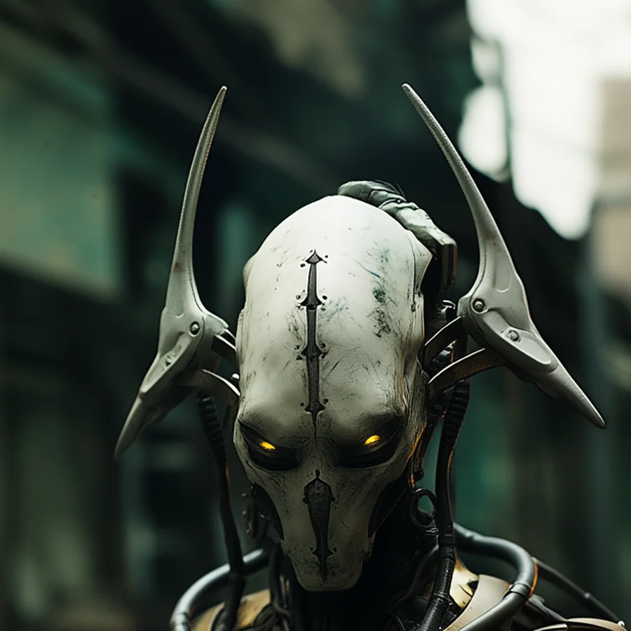
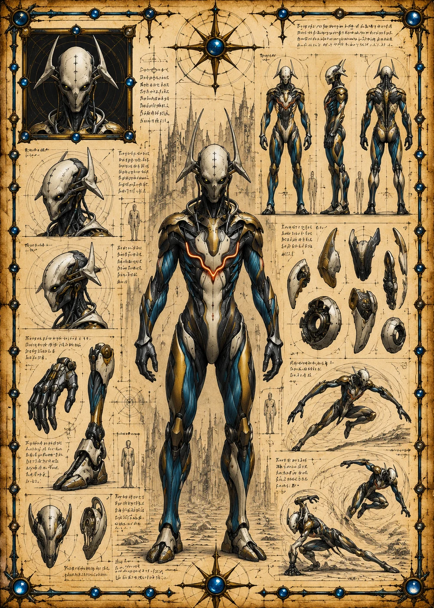

©
©
GENEZYS ARCHIVE · Earth 2 · Synthbot
Kerek
Bulwark Engine

Archive record
Kerek was built to carry the load that breaks other machines. The Fortified Burst vents everything poisoning the Syndicate's ranks and channels it into a single crushing beam. Kerek's pilot treats every battle as a stress test, and so far Kerek has never failed one.
Combat signature
Fortified Burst
160 Cosmara
240 Animus
240 Vitalis
Vents beam under load: Clears all DoT from all allies. Deals 170 damage to 1 enemy.
Genezys 04:05 ™&©2026LEGIONS
